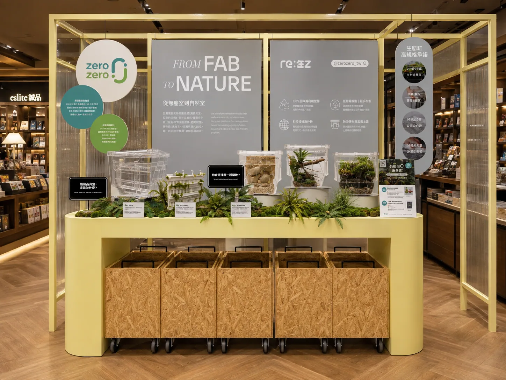
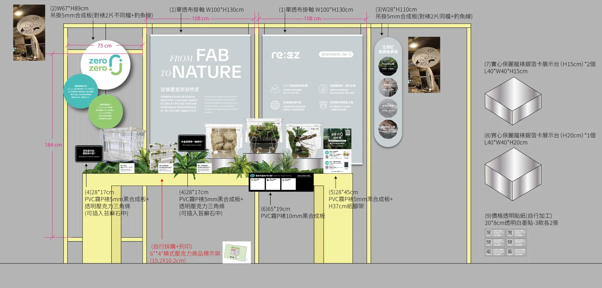
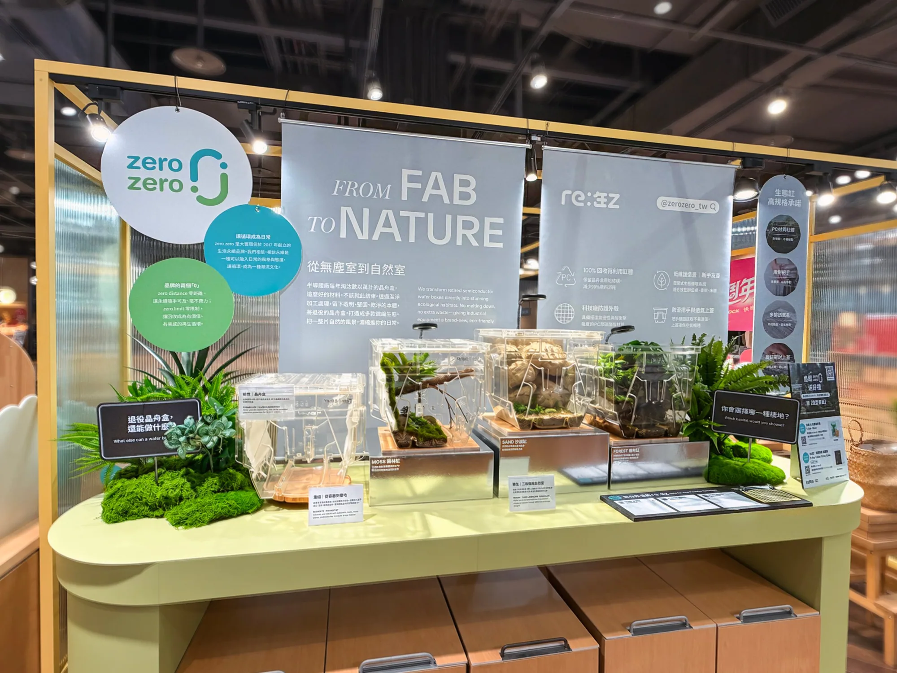
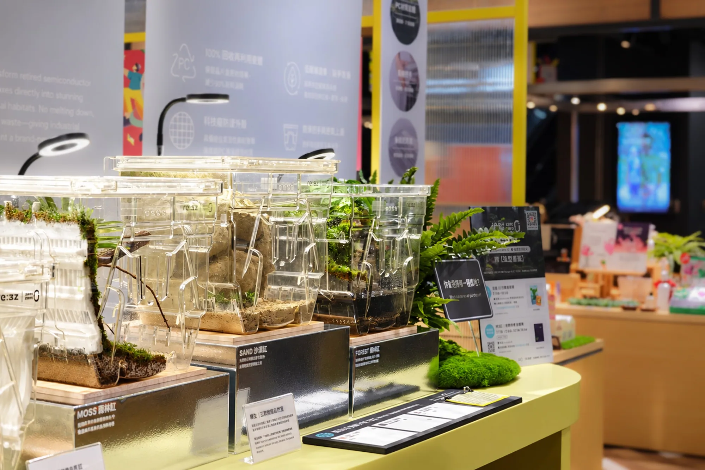
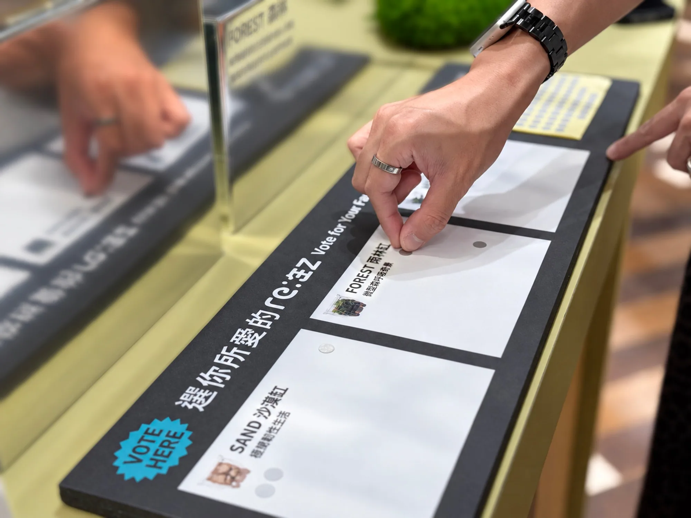

平面設計 ／ Pop-up Booth Design
From Fab to Nature：zero zero × 誠品生活鯤島美食宴
Design for zero zero
zero zero 在誠品生活「鯤島美食宴」的快閃攤位，推出以退役半導體晶舟盒改造的 re:生Z 生態缸。攤位以「From Fab to Nature 從無塵室到自然室」為主題，用淺灰布幔、圓形吊牌與苔蘚植栽，說明晶舟盒從工廠零件變成微縮自然的過程；檯面另設「選你所愛的 re:生Z」貼紙投票板，邀請路過的人停下來參與。
A pop-up booth for zero zero at Eslite Spectrum, launching re:生Z terrariums made from retired semiconductor wafer boxes. Themed "From Fab to Nature", it pairs soft grey banners, round hanging signs and moss styling with a sticker-vote board that invites passers-by to pick their favourite habitat.
設計規劃 Design




現場實拍 On Site







